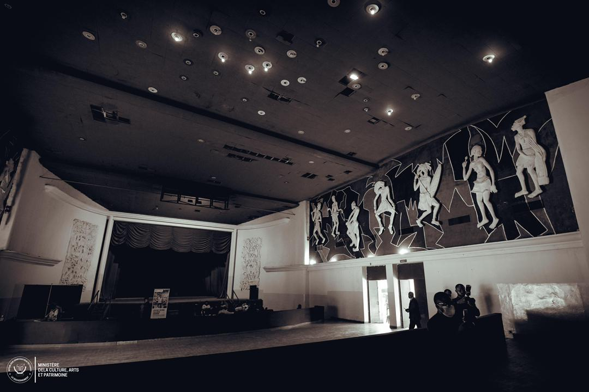

Financement
Soutenir la réhabilitation de la salle et le programme culturel de la saison.
Partenariat institutionnel
Le Zoo allie mémoire, création et transition écologique. Nous cherchons des partenaires publics, privés et associatifs pour réhabiliter la salle historique et faire rayonner la culture congolaise.
Construit en 1956 et devenu centre culturel public en 1993, le Zoo est un lieu de mémoire des arts du spectacle de Kinshasa. Sa salle a besoin d’une réhabilitation urgente pour accueillir artistes et publics dans de bonnes conditions.
Le projet allie patrimoine, inclusion des jeunes artistes et gestion responsable des eaux, des déchets et des espaces extérieurs.
La culture, c’est l’âme d’une nation.

Chaque contribution, financière ou non, compte pour rendre le Zoo plus accueillant.
Soutenir la réhabilitation de la salle et le programme culturel de la saison.
Fournir régie son et lumière, climatisation, sièges ou matériel de communication.
Associer votre nom à des événements suivis par un public large et varié.
Partager une expertise institutionnelle, technique ou de formation.
Aider au transport, à l’accueil des artistes ou à l’organisation d’événements.
Votre contribution est valorisée dans nos événements, notre communication et notre réseau culturel.
Vous contribuez à des espaces sûrs pour les artistes, les jeunes et le public, et à l’éducation culturelle.
Vous rejoignez un projet aligné sur les priorités nationales de culture, de patrimoine et de transition écologique.
Chaque événement soutenu fait l’objet d’un rapport d’activité public.
Financement, équipements, visibilité, accompagnement institutionnel ou soutien logistique.
Réhabilitation, communication, formation, événements, transition écologique ou accès à la culture.
Nous vous accompagnons pour établir un cadre clair, cohérent avec vos objectifs.


Écrivez-nous pour définir ensemble un partenariat sur mesure, durable et créateur de valeur culturelle.
Nous écrire +243 81 82 59 999